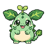
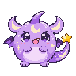
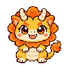

01 · FOREST
芽芽森林小兽
温柔又好奇。喜欢晒太阳，也想把每一片新叶子介绍给你。
叶片耳朵 / 头顶嫩芽 / 叶尾

待机原图 · 原尺寸
96 × 96 像素
31色与透明背景
三个小小伙伴，三种不同的性格
叶片里的好奇心，星光里的小梦，阳光里的勇气。先从这三个原创幼体开始，一起把日子慢慢养大。
正在预览：睡觉 · 闭眼呼吸
温柔又好奇。喜欢晒太阳，也想把每一片新叶子介绍给你。
叶片耳朵 / 头顶嫩芽 / 叶尾

待机原图 · 原尺寸
96 × 96 像素
31色与透明背景
慢悠悠，爱做梦。尾巴上的小星星，装着今天还没讲完的故事。
月牙额纹 / 迷你小翼 / 星星尾巴

待机原图 · 原尺寸
96 × 96 像素
31色与透明背景
开朗又勇敢。想和你玩球，也愿意在你累的时候，安静坐在旁边。
太阳鬃毛 / 奶油短角 / 卷卷尾巴

待机原图 · 原尺寸
96 × 96 像素
31色与透明背景
三只宠物已各有睡觉、吃饭、玩球4帧循环。睡觉为闭眼呼吸，吃饭有端碗、送入口中和咀嚼，玩球有伸爪、推动和跳起。这里可以自由看图，不会更换你已经领养的宠物。